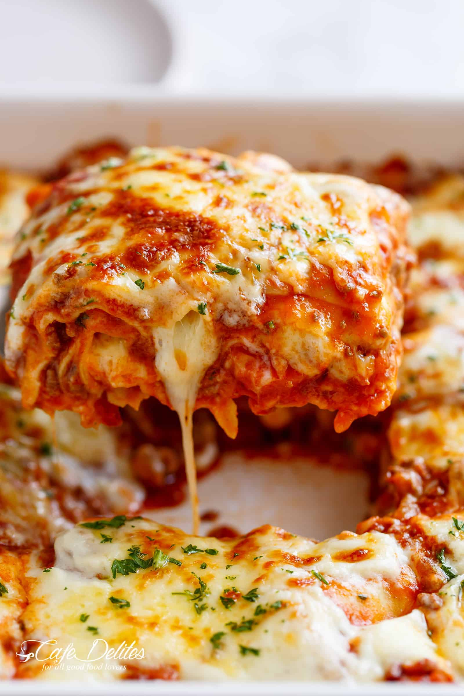

World's Best Lasagna

Making lasagna can be time-consuming, but the results are well worth the wait. You'll find a detailed ingredient
list and step-by-step instructions in the recipe below, but let's go over the basics:
Ingredients
- Meat
- Onion and Garlic
- Tomato Product
- Sugar
- Spices and Seasonings
- Lasagna Noodles
- Cheeeses
- Egg
Cooking Steps
How to Make Lasagna Step-By-Step
- Make the meat sauce.
- Cook the noodles.
- Make the ricotta mixture.
- Layer the lasagna according to the recipe instructions.
- Cover with foil and bake.
- Let the lasagna rest before serving.
How to Layer Lasagna
- Meat sauce
- Noodles
- Ricotta mixture
- Mozzarella slices
- Meat sauce
- Parmesan cheese
- Repeat the layers, then top with the remaining Parmesan.
How Long to Cook Lasagna
The assembled lasagna should take 50 minutes to cook in an oven preheated to 375 degrees F.
Cover it with foil for the first 25 minutes, then let it cook uncovered for the final 25 minutes. Also, it's
important to let the lasagna rest at room temperature for about 15 minutes before you cut into it.